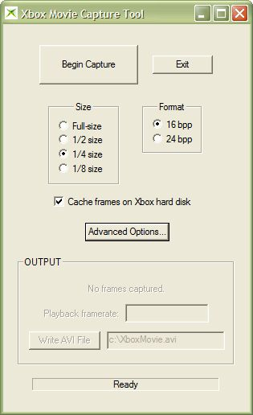
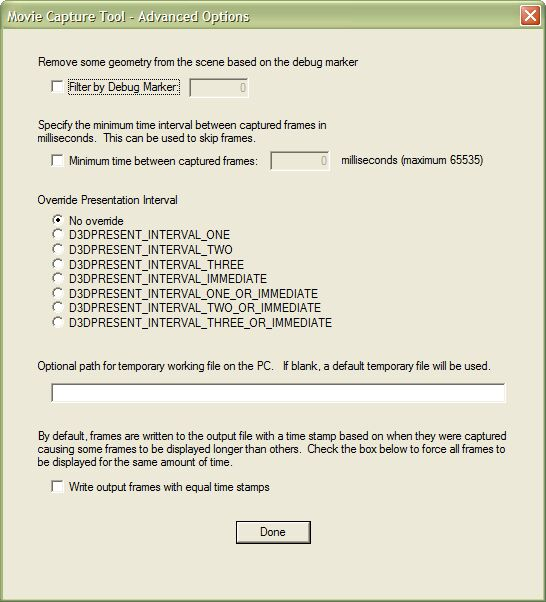
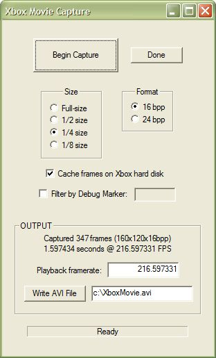
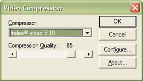

The Xbox Movie Capture tool (XbMovie) captures video output from a title running on an Xbox Development Kit console. After capturing frames from the title, XbMovie can use a variety of codecs to export the captured video to an AVI file.
USAGE: xbmovie
When first started, XbMovie presents you with a dialog box similar to the following:

You can change the size of the video that XbMovie captures by selecting an option from the Size group. The default is 1/4 size, which produces a video one-fourth the width and one-fourth the height of the Xbox display resolution. Smaller frame sizes require less time to capture and allow the game to run at a faster frame rate.
To change the color depth that XbMovie captures, choose one of the Format options. The 16 bpp option captures color at 16 bits per pixel, and the 24 bpp option uses 24 bits per pixel color. If you require a high frame rate for your captured video, the 16 bpp option will give you slightly better frame rate than the 24 bpp option.
The Cache frames on Xbox hard disk option, which is selected by default, tells XbMovie to first save captured video on the Xbox console hard disk. Once capture is complete, XbMovie copies the cached frames from the console to your development system. In most cases, caching to the Xbox hard disk makes for faster frame rate in the running game title, but the entire capture operation may take longer overall because of the time required to copy the cache.
Note When the Cache frames on Xbox hard disk option is selected, the captured movie can be no larger that the free space available on the Xbox console hard disk.
Clicking the Advanced Options button displays the Advanced Options dialog box, which is pictured below:

The Filter by Debug Marker option tells XbMovie to capture only geometry that has been marked by the SetDebugMarker function. Only objects drawn with the indicated debug marker will appear in the video captured by XbMovie.
Select the Minimum time between captured frames option to set a minimum period of time (in milliseconds) that must elapse between each frame captured by XbXray. If a game title renders a frame in less than the minimum period specified in this option, XbXray does not capture that frame. You can use this option to skip unnecessary capture of frames when a game title has little complex rendering to perform. At such times, the title's frame rate can climb high enough to result in far more captured frames than are needed in the AVI file.
The Override Presentation Interval options allow you to override the presentation interval used by the game title as it displays frames. Overriding the presentation interval may be useful in situations where the extra processing required by XbMovie to capture frames pushes the amount of time required to render a frame beyond the vertical blank (vblank) time. Because the title is taking longer to render some frames than the time allowed between screen refreshes, some frames are rendered at 60 fps while others are rendered effectively at 30 fps, resulting in choppy video capture. Selecting different presentation override options may smooth the captured movie.
The following table describes the effects of choosing each available option.
| Option | Description |
|---|---|
| D3DPRESENT_INTERVAL_ONE | The title swaps a frame at each screen refresh. |
| D3DPRESENT_INTERVAL_TWO | The title swaps a frame at every other screen refresh. |
| D3DPRESENT_INTERVAL_THREE | The title swaps a frame at every third screen refresh. |
| D3DPRESENT_INTERVAL_IMMEDIATE | The title swaps frames immediately. |
| D3DPRESENT_INTERVAL_ONE_OR_IMMEDIATE | The title swaps a frame at each screen refresh, but it swaps immediately if rendering a frame takes longer than a single screen refresh. |
| D3DPRESENT_INTERVAL_TWO_OR_IMMEDIATE | The title swaps a frame at every other screen refresh, but it swaps immediately if rendering a frame takes longer than two screen refreshes. |
| D3DPRESENT_INTERVAL_THREE_OR_IMMEDIATE | The title swaps a frame at every third screen refresh, but it swaps immediately if rendering a frame takes longer than three screen refreshes. |
The Optional path for temporary working file on the PC text box allows you to specify a location where XbMovie should write the temporary file it uses when creating an AVI file. If you have captured a large number of frames from the Xbox console, this temporary file can be quite large, so you may want to specify a drive that has plenty of available space. By default, XbMovie uses the drive from which it is run. XbMovie always deletes the temporary file upon exit.
Select the Write output frames with equal time stamps option if you want the AVI to display each captured frame for exactly the same period of time. By default, XbMovie saves a time stamp for each frame as the frame is captured. When writing the AVI file, XbMovie attempts to make sure each frame is displayed at approximately the same time it was captured, relative to neighboring frames in the movie. Building the AVI file from timestamp information may cause some frames to display longer than others. Game titles that are frame-based rather than time-based benefit from having the Write output frames with equal time stamps option turned on, because their in-game animation appears more smooth.
Make sure the scene you wish to capture is running on the Xbox console. Select Begin Capture to start capturing frames. The caption on the Begin Capture button changes to End Capture while XbMovie is busy capturing video. When you have collected as much video as you need, select End Capture. If you selected Cache frames on Xbox hard disk, XbMovie now downloads the captured frames from the Xbox console to your development system.
Once the video has been downloaded from the console, XbMovie displays statistics about the captured video in the OUTPUT frame, as shown in the following image:

To write an AVI file from the captured frames, follow these steps:
Adjust the frame rate of the AVI by changing the value in the Playback framerate text box.
By default, the frame rate displayed in this box is equal to the average frame rate at which XbMovie captured the movie from the Xbox console.
Set a location and file name for the AVI file in the text box next to the Write AVI File button.
By default, XbMovie
writes an AVI file to c:\XboxMovie.avi.
Select Write AVI File.
XbMovie displays the Video Compression dialog box, as shown below:

From the Compressor drop-down list, choose a codec to compress the video.
To adjust the video quality and select other codec options, do the following:
To begin writing the AVI file, select OK.
XbMovie can only capture frames from a game title compiled with the libraries in the May 2002 or later XDK. Also, the Xbox development console on which the title is running must be recovered with the recovery disc from the May 2002 or later XDK.